Kamogawa, Chiba: things to do, food and stays
Kamogawa · Chiba
Kamogawa
Highlighted on the Chiba map.
Stay
鴨川温泉 璃庵
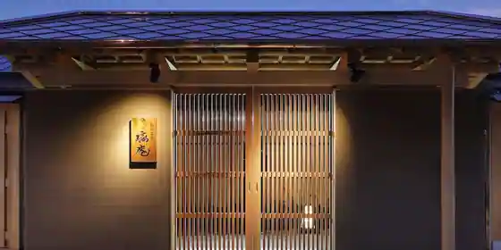
Kamogawa Onsen Ri Iori
Inn at Kamogawa Onsen in Tenmen, Kamogawa with open-air baths.
LA SHORO -ラ･松廬- ONSEN＆VILLAS
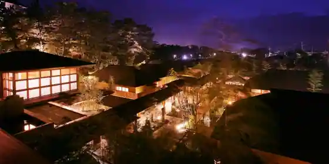
LA SHORO - Ra Ra Shoro - ONSEN&VILLAS
Inn in Nishi, Kamogawa with open-air baths and a sauna.
魚彩和みの宿 三水
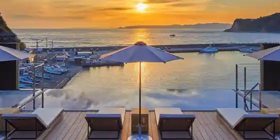
Sakana Sai Nagomi No Yado Samizu
Inn in Kominato, Kamogawa with open-air baths.
こみなと漁師料理 海の庭
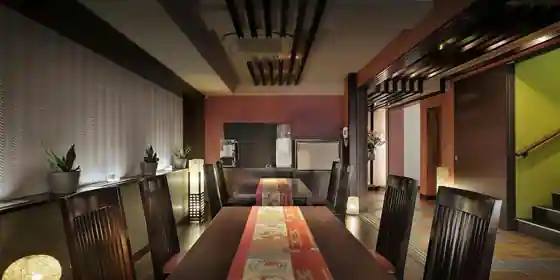
Kominato Ryoshi Ryori Umi No Niwa
亀の井ホテル 鴨川
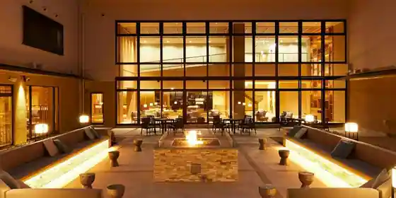
Kame No I Hotel Kamogawa
蓬莱屋旅館
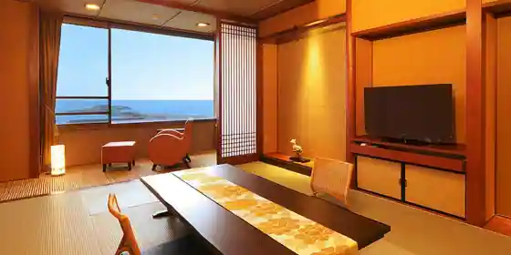
Horai Ya Ryokan
Ryokan inn in Tenshin, Kamogawa with open-air baths and scenic views.
オーベルジュ 波太オルビス
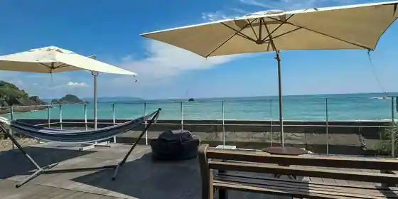
Oberuju Nami Ta Orubisu
Rakuten STAY VILLA 鴨川
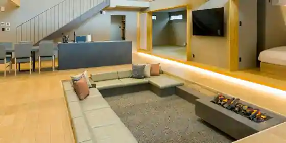
Rakuten STAY VILLA Kamogawa
鴨川館
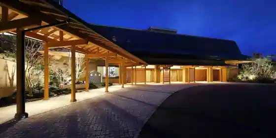
Kamogawa Kan
天津小湊温泉 城崎の源泉の湯 宿中屋
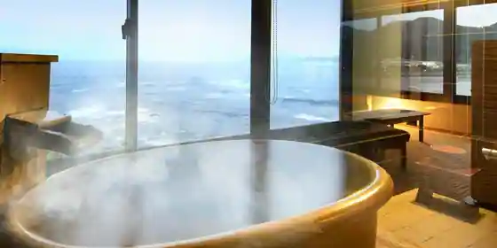
Amatsukominato Onsen Kinosaki No Gensen No Yu Yado Nakaya
Inn at Amatsukominato Onsen in Tenshin, Kamogawa.
満ちてくる心の宿 吉夢
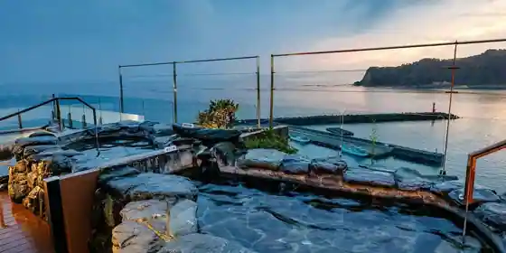
Michi Tekuru Kokoro No Yado Kichimu
旬彩の宿 緑水亭
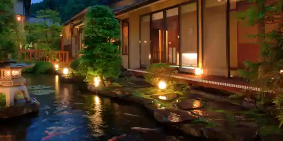
Jun Sai No Yado Ryokusuitei
Inn in Uchiura, Kamogawa with breakfast available.
Dining
手造りそば 打墨庵 加瀬
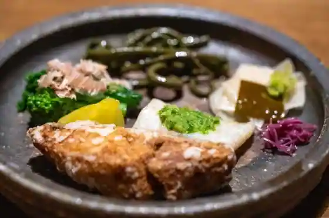
Te Tsukuri Soba Da Sumi Iori Kase
食事処 池田
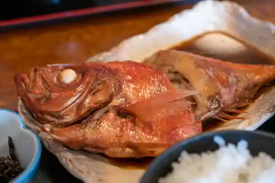
Shokuji Tokoro Ikeda
大寿司
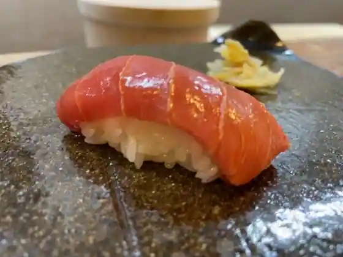
Dai Sushi
緑水亭
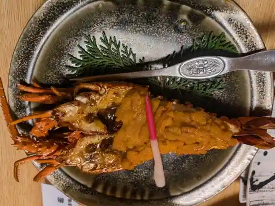
Ryokusuitei
松鮨
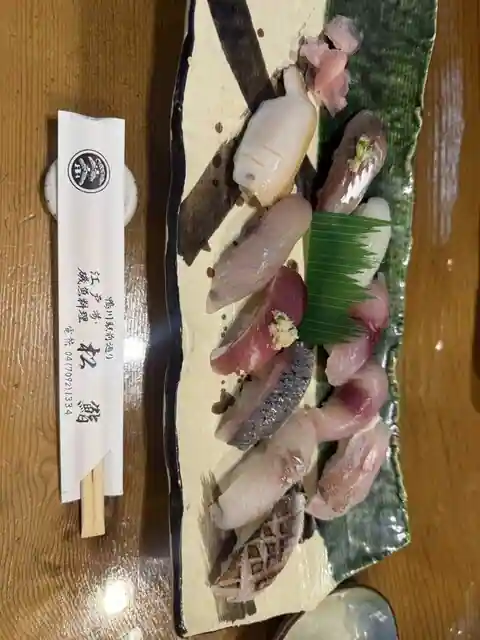
Matsuzushi
まるよ 西条店
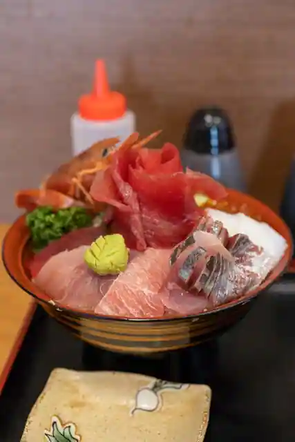
Maruyo Saijo
地魚回転寿司 丸藤 本店
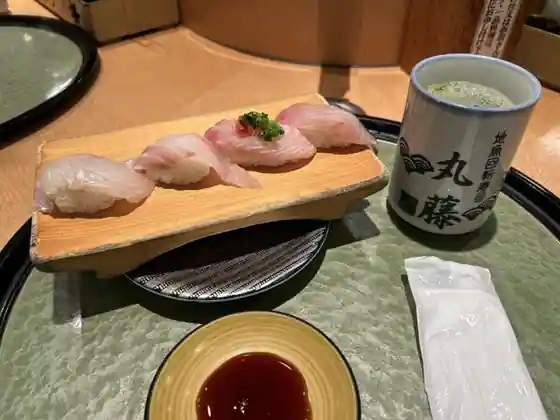
Jizakana Kaitenzushi Marufuji Hon
船よし
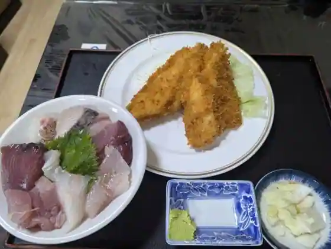
Fune Yoshi
大輪 鴨川店
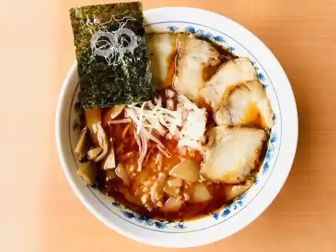
Tairin Kamogawa
鮨 笹元
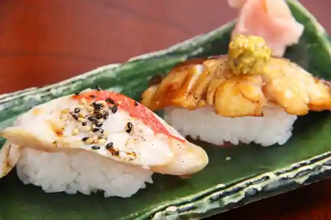
Sushi Sasa Moto
ラ・パティスリー・ベルジュ
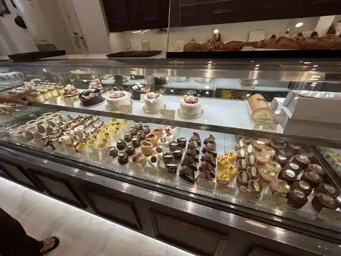
Ra Pateisuri Beruju
オーシャン
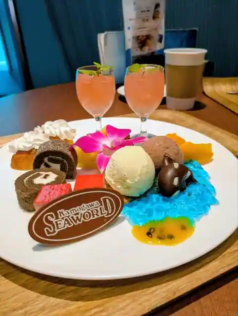
Oshan
Cafe & Meal MUJI みんなみの里
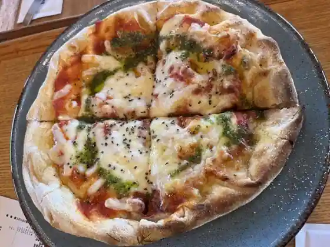
Cafe & Meal MUJI Minnamino Sato
なかむら 小湊店
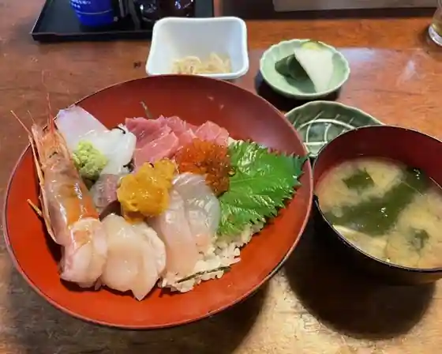
Nakamura Kominato
カモガワ バウム
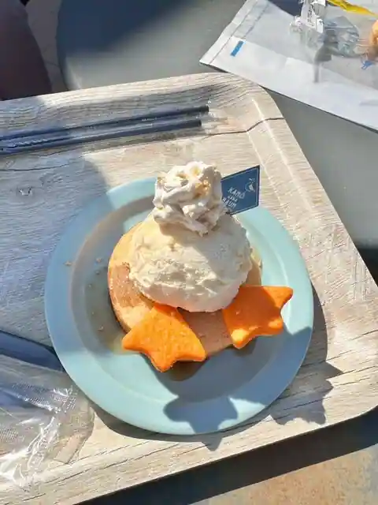
Kamogawa Baumu
KAMOGAWA BREWERY
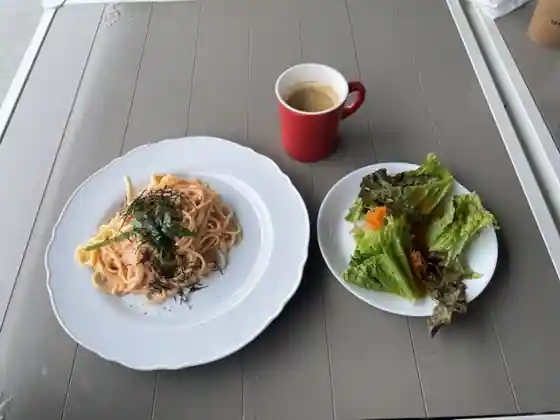
KAMOGAWA BREWERY
カネシチ水産
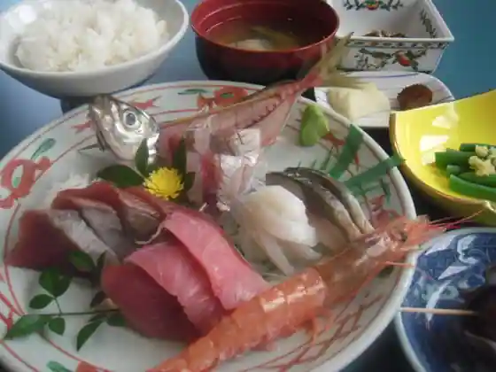
Kaneshichi Suisan
お食事処 名代亭
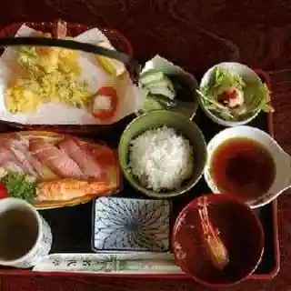
O Shokuji Tokoro Myodai Tei
両国 鴨川駅西口店
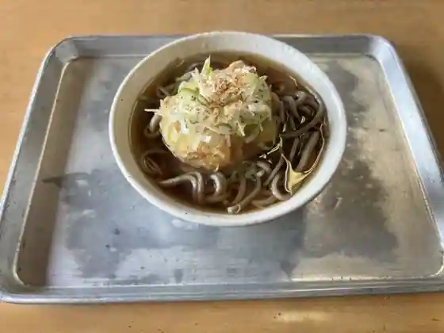
Ryogoku Kamogawa Eki Nishiguchi
浜の食堂
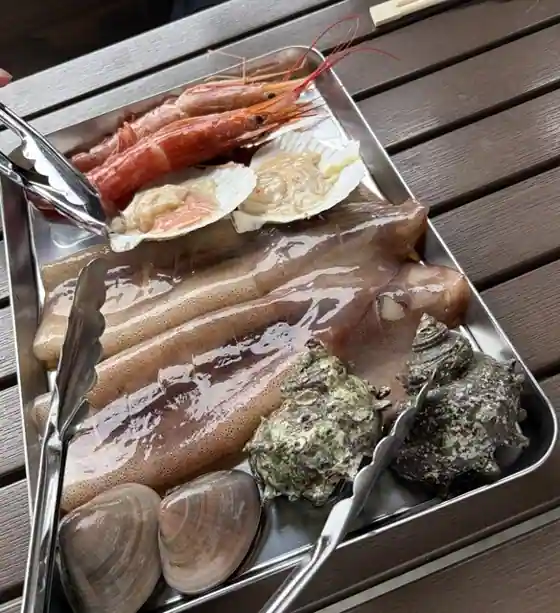
Hama No Shokudo
川京
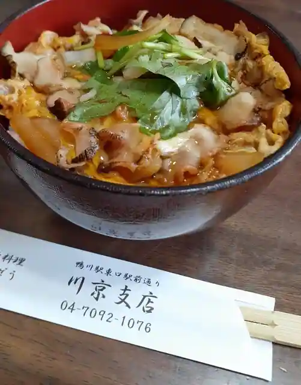
Kawa Kyo
食事処かしわくら
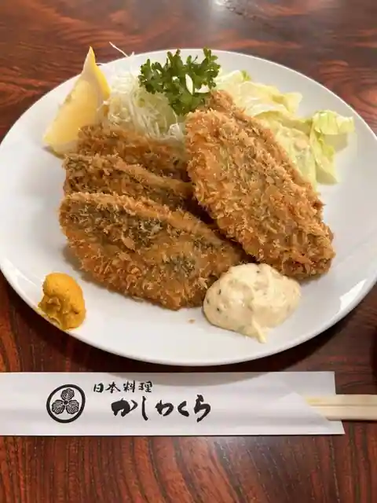
Shokuji Tokoro Kashiwakura
THE GUNJO RESTAURANT
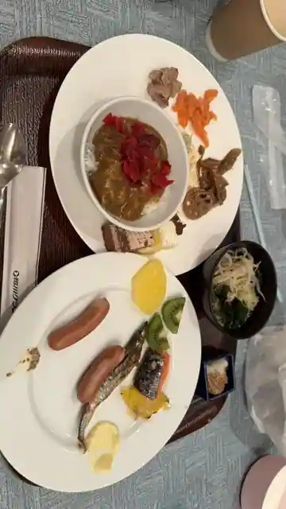
THE GUNJO RESTAURANT
Sights
Kamogawa Shiiwarudo
Kamogawa SEASIDE BASE
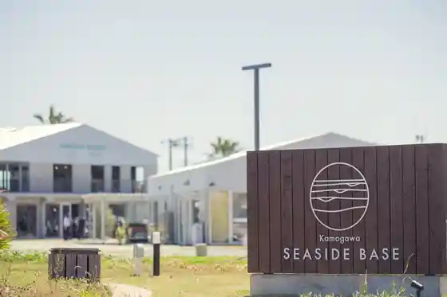
Omoto Yama Tanjo Tera
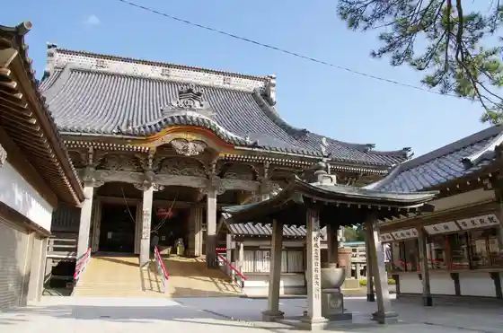
Omoto Yama Kiyosumi Tera
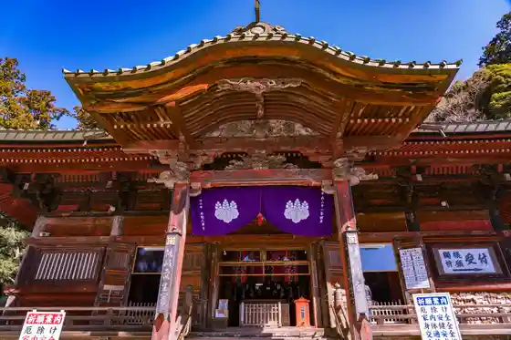
Roadside Station Kamogawa Oshan Park
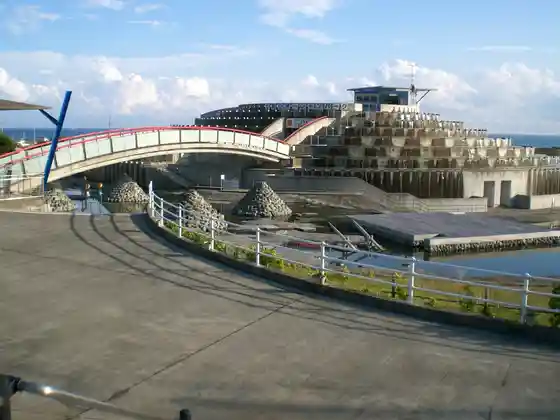
Niemon Shima
Tai no Ura Yuransen
Uomi Tsuka Lookout
Ta Umi Furawa Isozuri Ri Center
Kinosaki Beach
Michi no Minato
Ta Umi Coast (Ta Umi Beach)
Shiisaidoterasu Chiba Kamogawa
Shiho Ki Fudo Taki
Shiosai Market
Hana Aji Ketsu
Kasutera Workshop Ruashieia
Kamogawa Man Shuku Some Suzu Some
Kominato Satomi Gakko
Uchiura Coast (Uchiura Beach)
Maehara Yoko Nagisa Coast (Maehara Beach)
Oyama Tera Fudo Mikoto
Kamogawa Uoruato
Uchiura Yamagata Tami Forest
2026 Nendo Chibakenmin Shi Town Village Kansha Gekkan / Kamogawa Shiiwarudo
Emi Beach
Hisashi Mankame Kameda Shuzo
Iki Iki Kominato Uopoto
JA Guriin Kamogawa Mise
Kameya Main Shop
Teyaki Kiokaki Takanashi
Nagai Katsuobushi Mise
Komeya Shinzo
Nitcho Tera